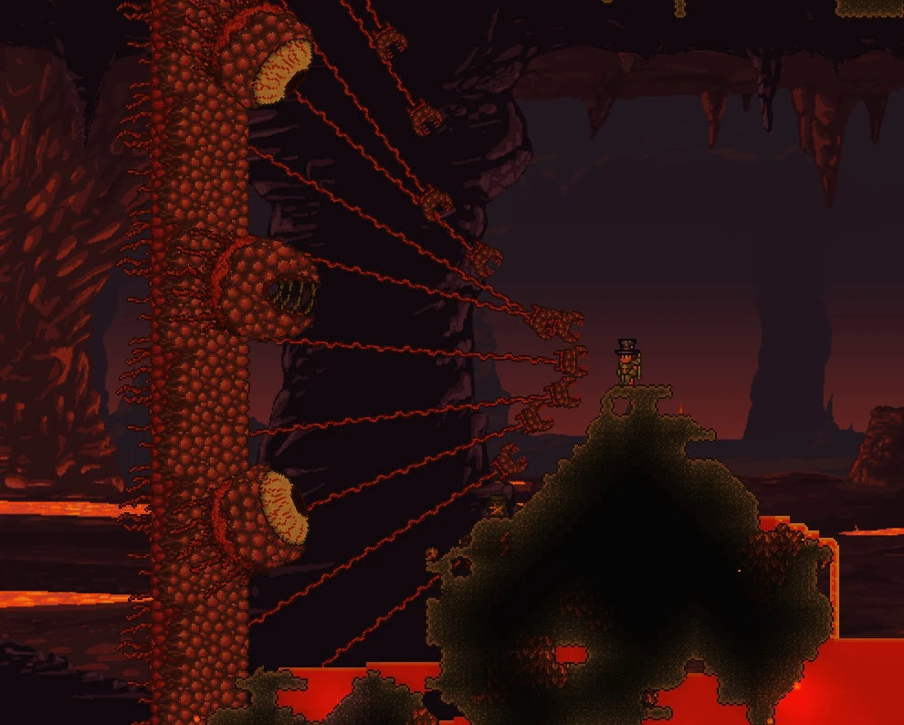

Terraria é uma terra de aventuras! Suas opções em Terraria são infinitas. Você é um jogador com o dedo no gatilho? Um grande construtor? Um colecionador? Um aventureiro? Aqui tem algo para todos.
Comece construindo um abrigo básico, depois escave à procura de minérios e outros recursos. Descubra e crie até 500 armas de magia, de longa distância, de ataque físico e de invocação bem como também armaduras e use-os para combater centenas de inimigos diferentes. Em breve, você estará lutando cara-a-cara contra qualquer um das dúzias de chefes. Vá pescar, ande com a sua montaria, encontre Ilhas Flutuantes, construa casas para NPCs úteis, e muito, muito mais.
O mundo de terraria tem várias possibilidades, sendo divididas em 2 partes.
Pré-hardmode é o estado inicial do mundo do jogador. Ele é essencialmente uma versão 'fácil' do mundo, apresentando inimigos e itens apropriados para novos personagens.
O pré-Hardmode começa na criação do mundo e termina com a derrota da Parede de Carne
O mundo de terraria é dominado por tipos de chefões e você conseguindo matar eles, pode conseguir uma variedade de itens. Listando alguns deles abaixo.
O Olho de Cthulhu é um globo ocular gigantesco com 2 800 / 3 640 / 4 641 de vida.
Ele tem uma chance de 1 a 3 de aparecer todas as noites quando o jogador tiver 200 HP ou mais, 3 ou mais NPCs morando em casas, e mais que 10 pontos de defesa.
Ele continuará a fazer isso até ele ser derrotado pela primeira vez. Pode também ser invocado usando um Olho Suspeito de noite.
Se ele não for derrotado pelo jogador até o final da noite, ele irá subir e desaparecer. Esse é geralmente o primeiro chefe um jogador deve enfrentar. Ele passa por blocos, e invoca Servos de Cthulhu.
Geleia Rei é um chefe do Pré-Modo Difícil. Sua aparência é de uma Geleia Azul gigante vestindo uma coroa de joias e um aparente ninja dentro de si.
Na Versão para Console old-gen Versão para Console old-gen e Versão para Versão para 3DS do jogo, ela não tem a sua coroa. Conforme a Geleia Rei leva dano, ela invoca Geleias Azuis comuns adicionais (e Geleias com Espinhos no Modo Perito e Mestre) e seu tamanho diminuirá.
A Geleia Rei aparece sobre uma das seguintes condições:
Um jogador usa uma Coroa de Geleia.
150 geleias são derrotadas durante o evento Chuva de Geleias (ou 75 se a Geleia Rei já foi derrotada no mundo pelo menos uma vez).
Raramente nos sextos laterais externos no mapa, durante o dia, e apenas na grama.
Lutar contra a Geleia Rei é completamente opcional e não é necessário para avançar no jogo, mas a sua derrota pode recompensar o jogador com dinheiro e itens úteis.